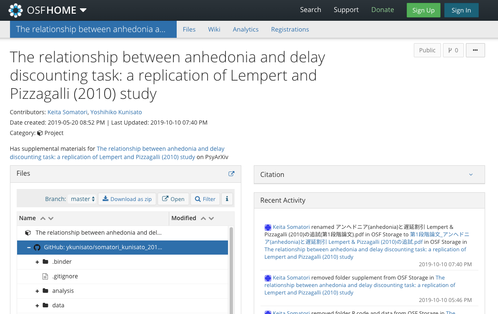
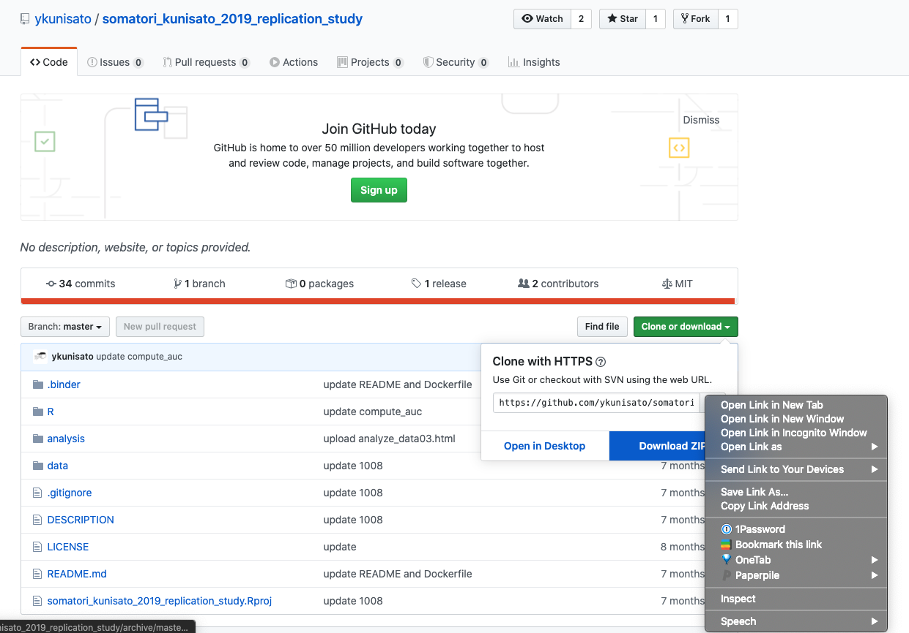

心理学関連オープンデータをリスト化してみました（私以外にも有志の方に追加をしてもらっています。もし，ご存知のオープンデータがありましたら，追加ください）。
心理学関連のオープンデータの一部をRにダウンロードできるRパッケージopenPsychDataをつくりました。まだ開発途中で，本パッケージの使用に関わるトラブルについては責任は負えませんので，予めご了承ください（一緒に開発してくれる人がいれば，連絡ください）。
openPsychDataは，Rコンソールに以下を打ち込むことで，GitHubからインストールできます。
# install.packages("devtools")
devtools::install_github("ykunisato/openPsychData")現状では，Open-Source Psychometrics Projectのデータをダウンロードして，Rにデータとして読み込みができます。Open-Source Psychometrics Projectをみて，以下のGoogleスプレッドシートのdataset_name in openPsychDataの列から，必要なデータセットの「dataset_name」を確認ください。利用可能なデータセットは順次増やしていく予定です。
データの読み込み データを読み込む場合は，load_openPsyData()を使ってください。「dataset_name」に使いたいデータの名前を指定ください。もし，まだカレントディレクトリにデータをダウンロードしていない場合は，自動的にダウンロードします（カレントディレクトリに「dataset_name」と同じ名前のディレクトリを作成して，データを保存します）。 codebookをTRUEにしておくと変数の説明をしたcodebookを開きます。
library(openPsychData)
data <- load_openPsyData(dataset_name = "16PF", codebook = TRUE)Open Science Frameworkには，有用＆貴重なデータセットが公開されています。例えば，以下のデータセットには，COVID-19が流行る前の日本における1382名の感染脆弱意識尺度への回答が収められています。
OSFにあるデータをRで使う場合は，osfrパッケージが便利です。使うのは，tidyverseパッケージとosfrパッケージです。
library(tidyverse)
library(osfr)Japan PVD 2018リポジトリ(https://osf.io/qw2af/)をosf_retrieve_node()でリトリーブしてみます。 metaにいろいろな情報が入っています。
osf_retrieve_node("qw2af")## # A tibble: 1 x 3
## name id meta
## <chr> <chr> <list>
## 1 Japan PVD 2018 qw2af <named list [3]>次に，リトリーブしたものをosf_ls_files()にいれて，リポジトリのファイルを確認します。PVDJapan2018.xlsxとDataset.txtがあるのがわかりますね。
osf_retrieve_node("qw2af") %>%
osf_ls_files()## # A tibble: 2 x 3
## name id meta
## <chr> <chr> <list>
## 1 PVDJapan2018.xlsx 5ea32abf3854e2001c69dcbb <named list [3]>
## 2 Description of Dataset.txt 5ea5a81176188b00da911eee <named list [3]>最後に，osf_download()でosf_ls_files()で確認したファイルをローカルにダウンロードします。
データやコードがOSFにある論文も多いが，データとコードがGitHubにアップロードされている論文も多いです。例えば，以下の論文のデータやコードはGitHubにアップロードされています。

GitHubのデータやコードをRで使う場合，リポジトリのリンクを取得して，Rで読み込むと楽です。まず，以下のようにして，右クリックして，リンクアドレスをコピーします。

そして，コピーしたリンクを使って，以下のRコードを実行します（URLだけ変えればあとはコピペでいけます）。そうすると，カレントワーキングディレクトリに，データやコードが含まれたフォルダが作られます。